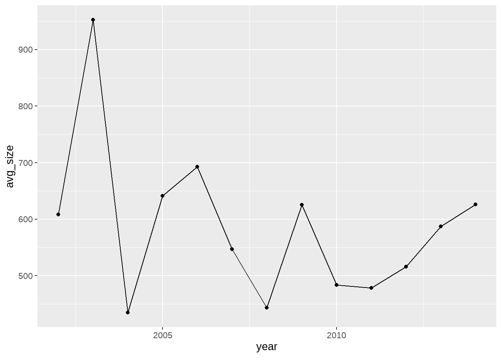
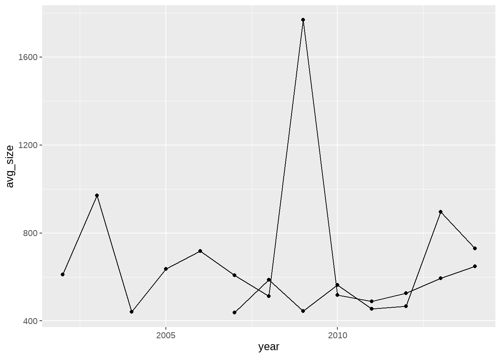
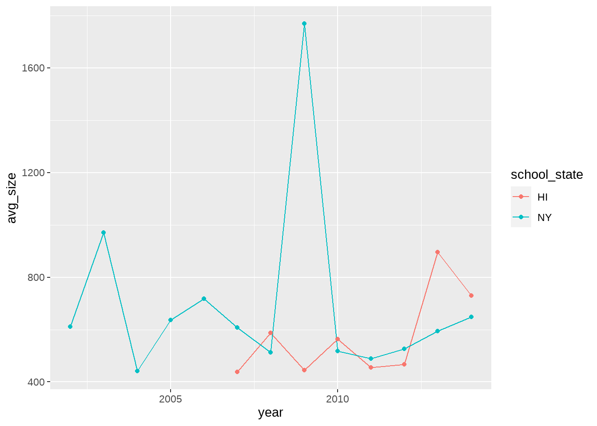
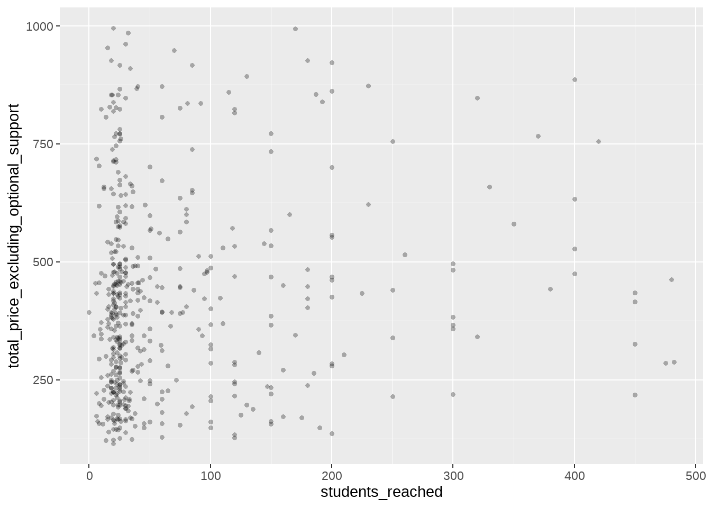
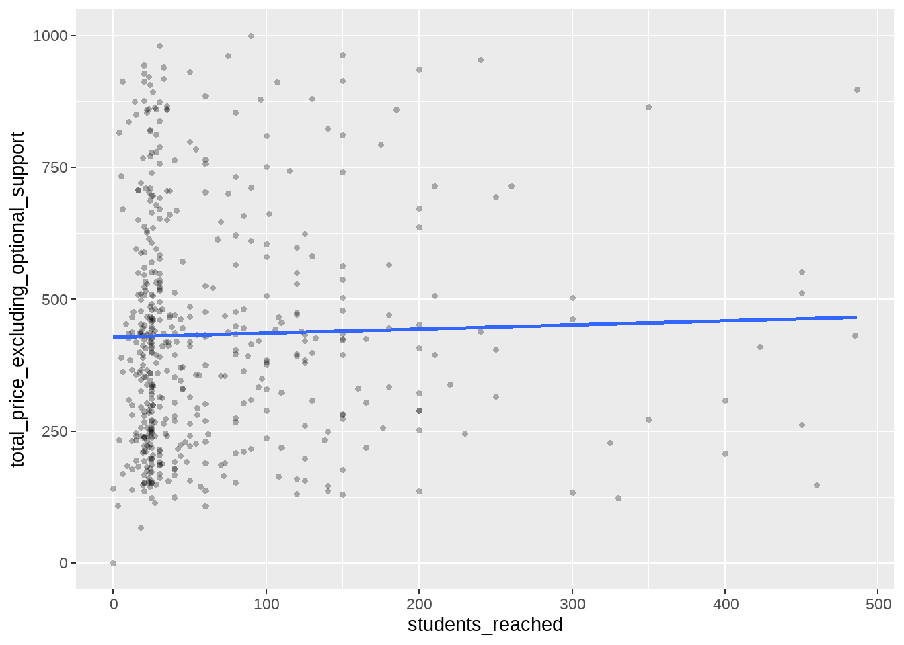
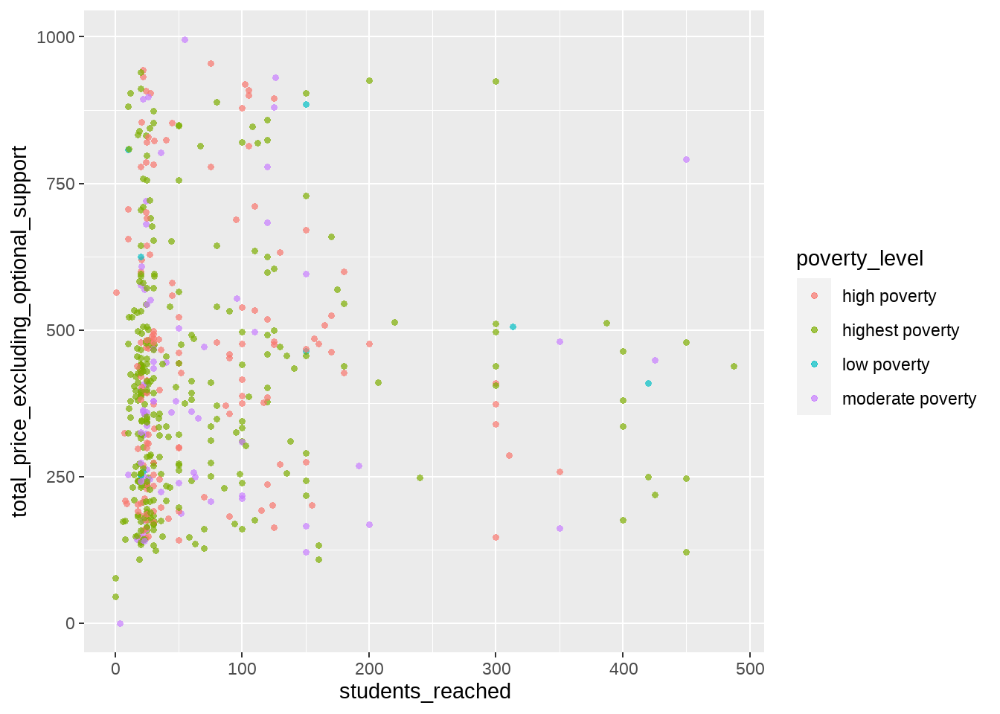
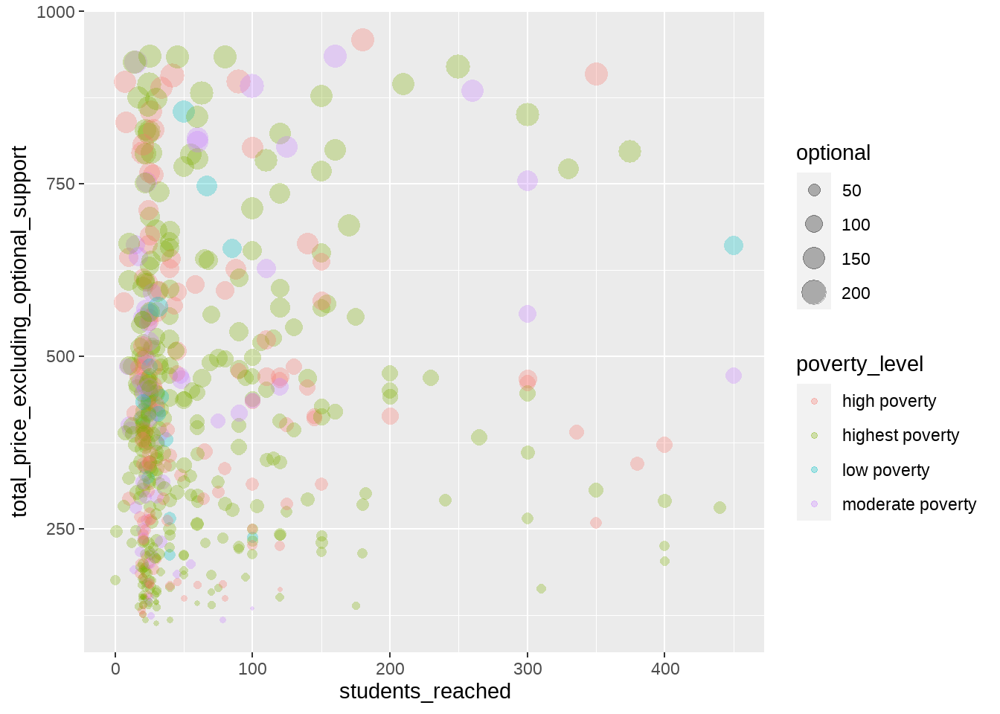
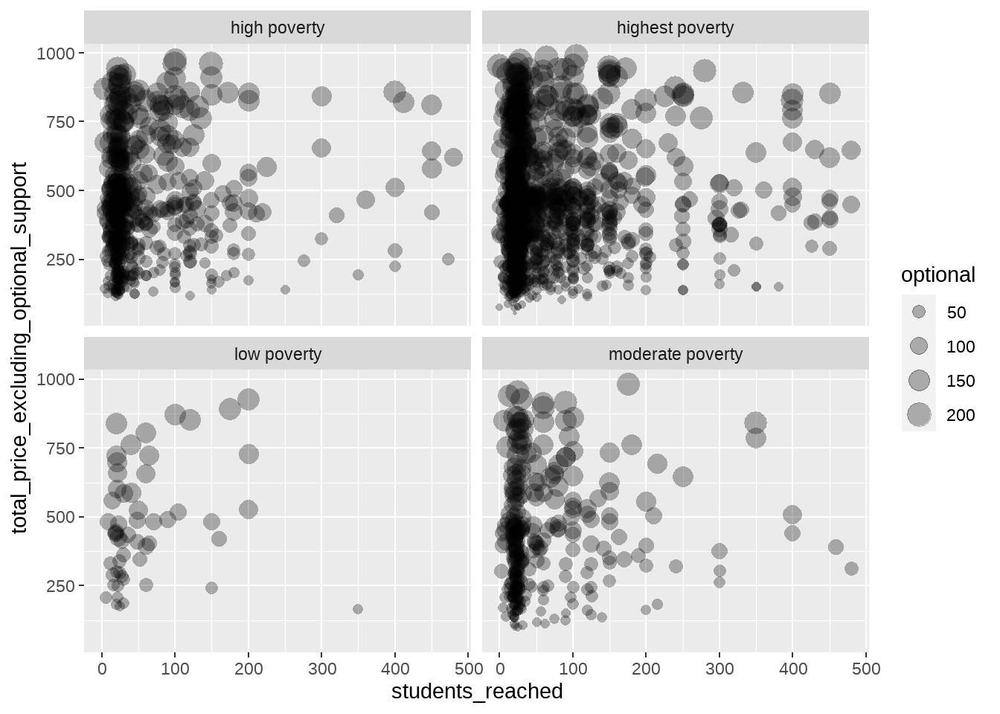

library(tidyverse)
options(scipen=999)
projects <- read_csv("data/projects.csv")8 데이터 시각화
앞선 챕터에서 연습한 그룹별 요약까지 이루어지고 나면, 시각화는 단지 요약된 결과를 시각 정보로 전달하는 것에 불과합니다.
사실 R에는 tidyverse 방식의 시각화 말고도 강력한 시각화 기능이 포함되어 있는데요, tidyverse에 포함된 ggplot2라는 시각화 패키지는 그 기능이 너무 출중하여,웹 뿐 아니라 출판을 위한 시각화 자료 생성에 사실상 기본적인 R의 시각화 기능을 대체하는 표준 문법으로 자리잡았습니다. 심지어 R이 아닌 다른 언어를 쓰는 데이터 과학자들도 시각화만큼은 ggplot2를 사용하는 경우가 있을 정도 입니다.
8.1 ggplot2의 기초: 계층(layer) 개념 이해하기
ggplot2는 상당히 독특한 문법 체계를 가지고 있습니다. 일단, ggplot2만의 독특한 계층(layer)체계를 이해해야 합니다. ggplot2는 시각화를 데이터로부터 최종 시각 표현까지 도달하기 위해 순서대로 계층을 쌓는 과정으로 이해합니다. 그 계층들은 다음과 같습니다.
- Data
- Aesthetic
- Geometries
- Facets
- Statistics
- Coordinates
- Theme
다음 그림은 이를 표현하고 있습니다.
Data 계층은
ggplot2로 시각화하고 싶은 테이블 형태의 데이터를 의미합니다. 해당 데이터에 포함된 각 컬럼은 ’변수’를 나타내는데, 시각화에 대해 이야기 할 때는 데이터에 포함된 변수를 외부변수라고 부르겠습니다.그 위에 Aesthetics 계층이 얹혀집니다. Aesthetics 계층은 Data계층에 포함된 외부변수와
ggplot2가 스스로 이해할 수 있는 내부변수 간의 연결을 만들어 줍니다. 그러한 내부변수들로는 다음과 같은 것들이 있습니다.x: x축 값으로 표현하는 변수y: y축 값으로 표현하는 변수color: 선 색깔로 표현하는 변수fill: 면적의 색깔로 표현하는 변수size: 크기로 표현하는 변수linetype: 선의 모양으로 표현하는 변수group: 그룹을 정의하는 변수 Aestheics 계층에서 이용자는 데이터에 포함된 컬럼, 즉, 외부 변수 중 어느 것들이 이들 내부 변수에 해당할 것인지를 지정해 주어야 합니다.
그림: 외부변수-내부변수
Geometries 계층은 그래프 타입이라고 생각하면 됩니다. 선 그래프, 바 그래프, 파이 차트 등이 대표적인 그래프 타입들입니다.
Facets계층은 여러개의 그래프를 동시에 표현하는 것을 의미합니다. 예컨대, 한국과 미국에 대해 비교를 같은 종류의 그래프를 나란히 그려주는 것 입니다.
그림: facets
Statistics 계층은, 시각화 전에
ggplot2가 자체적으로 특정 계산을 해 주는 것을 의미합니다.Coordinates 계층은 말 그대로 좌표계를 선택하는 것입니다. 우리가 일반적으로 알고 있는 유클리디안 좌표계 말고도, 극 좌표계와 같이 특수한 좌표계를 이용할 수도 있고, 일반 좌표계에서도 x축의 간격과 y축의 간격을 다르게 하거나, x축과 y축을 바꾸어버릴 수도 있습니다.
마지막으로 Theme 계층은 그 외 시각화의 미적 부분을 정의합니다.
여기서 coordinates과 theme 계층은 기초적인 시각화를 위해 반드시 필요하기 보다는 시각화된 결과를 조금 더 (스토리텔링 관점에서) 보기 좋게 하기 위한 목적이 크기 때문에, 스토리텔링에 관한 변도의 장에서 따로 다루기로하고 여기서는 나머지 계층에 대해 설명해보겠습니다.
8.2 ggplot2 사용해보기
이제 바로 gglot2를 사용해 앞서 만들어낸 그룹별 요약을 바로 시각화 해 보겠습니다.
projects |>
group_by(school_state) |>
summarise(avg_size = mean(total_price_excluding_optional_support),
count = n()) |>
filter(avg_size > 600) |>
ggplot() +
aes(x=school_state, y=avg_size, fill=school_state) +
geom_bar(stat="identity") ggplot()으로 시작하는 코드가 나오기 전까지의 코드는 이전 챕터에서 만들어낸 그룹별 요약 + 서브세트와 정확하게 동일합니다. 즉, 앞서 만들어낸 그룹별 요약는데 이어서, ggplot2의 계층을 규칙대로 쌓아주기만 하면, 시각화 자료가 만들어집니다. 그러면 ggplot2 문법 부분을 차례대로 설명해 볼까요? 1. ggplot(): 이제부터 ggplot2를 이용해 시각화를 시작한다는 의미입니다. 이 앞의 코드를 통해 만들어 낸 그룹별 요약의 결과 역시 데이터 프레임이라고 했고, 이를 파이프를 통해 ggplot() 함수와 연결 시켰기 때문에, 앞서 만든 요약 결과가 ggplot2를 통한 시각화의 ‘Data’ 계층에 해당한다는 것을 알 수 있습니다. 2. aes(x=school_state, y=avg_size, fill=school_state): aes()는 Aesthetics 계층을 의미합니다. 즉, 여기서는 ’내부변수’인 x, y, fill을 ’외부변수’인 school_state, avg_size, school_state와 연결시키고 있는 것입니다. 물론 이들 외부 변수 이름은 Data 계층에 존재하지 않는다면 에러가 발생할 것입니다. x와 fill 모두에 school_state이 연결되어 있다는 것에도 주목해보세요. x와 school_state이 연결되었기 때문에, x축의 한 자리마다 하나의 주에 해당하는 바 그래프가 그려진 것이지만, 또, fill과 school_state도 연결되었기 때문에, 각 주는 다른 색깔의 바 그래프를 가지게 된 것입니다. 내부변수 fill을 사용하지 않으면 어떻게 되는지 확인하고 싶다면, fill=school_state 부분을 지우고 다시 실행시켜보세요. 3. geom_bar(stat="identity"): 먼저 geom_bar()는 Geometries 계층으로 바 그래프를 선택했다는 것을 의미합니다. 그런데 그 안에 stat="identity"라는 인수가 있지요? 이는 Statistics 계층에 대한 조작입니다. geom_bar() 함수는 우리가 아무런 지시도 하지 않으면 기본 동작으로 Data 계층에서 숫자를 센다음 이를 내부 변수 y로 삼으려는 계산 즉, Statistics 계층에서의 행동을 기본 값으로 가지고 있습니다. 다른 geometries 함수들은 대개 그렇지 않은데, 이는 geom_bar() 함수의 특성입니다. 그런데, 우리는 우리가 원하는 y 값으로 avg_size를 미리 계산해 두었지요? 따라서, stat="identity"라는 옵션을 줌으로써 이용자가 Data 계층을 통해 공급한 외부 변수와, Aestheics 계층에서 만든 내부변수 y와의 연결을 “시키는 그대로(=identity)” 받아들이라고 명령하는 것입니다.
여기까지 해서 우리는 위의 코드를 통해 Statistics 계층까지를 지정해준 것입니다. 그 외의 계층은 별도로 건드리지 않으면 기본값에 따라 시각화 표현을 만들어 줍니다.
또 하나 유의해야 할 것은 ggplot()이라고 시각화 코드가 시작하면, 거기서부터는 |>라는 지금까지 써왔던 파이프 대신 +를 파이프로 사용한다는 것입니다. 이를 잊어버리는 것도 에러를 발생시키는 흔한 원인이 되니 유의하기 바랍니다.
경우에 따라서는 막대 그래프를 세로가 아니라 가로로 그리고 싶을 때도 있습니다. 그럴 때는 어떻게 하면 좋을까요? 내부변수 x에 대응하는 외부변수와 y에 대응하는 외부변수를 바꿔지기만 하면 됩니다. 즉, Aesthetics 계층만 살짝 수정해부면 되는 것이지요. 이제 왜 ggplot2의 계층 구조가 편리한 것인지 조금 감이 오실 것입니다. 다음 코드가 앞의 코드와 다른 점을 잘 찾아보세요.
projects |>
group_by(school_state) |>
summarise(avg_size = mean(total_price_excluding_optional_support),
count = n()) |>
filter(avg_size > 600) |>
ggplot() +
aes(x=avg_size, y=school_state, fill=school_state) +
geom_bar(stat="identity") 8.3 선그래프와 시간 데이터의 표현
이번에는 선 그래프를 그려보도록 하겠습니다. 선 그래프를 그리기 위해서는 Geometries 계층만 선그래프에 해당하는 것으로 바꿔주면 됩니다. geom_bar()를 geom_line()으로 대체해주는 것이지요.
projects |>
group_by(school_state) |>
summarise(avg_size = mean(total_price_excluding_optional_support),
count = n()) |>
filter(avg_size > 600) |>
ggplot() +
aes(x=school_state, y=avg_size) +
geom_line(aes(group=1)) +
geom_point()이 그래프 역시 맨 처음의 막대 그래프와 거의 아무런 차이가 없습니다. 단, Geometries를 변경하기 위해 geom_bar() 대신 geom_line()을 사용해 주었지요. 그리고, geom_line() 안에도 Aesthetics, 즉, aes() 함수가 있습니다. 이 역시 내부 변수와 외부 변수를 연결하는 역할을 합니다. group 역시 ggplot2가 사용하는 내부변수라고 위에서 설명했지요? 그런데, 왜 geom_line() 안에 있을까요? 해당 연결은 그래프 전체를 그릴 때가 아니라, 선을 그릴 때만 유효했으면 하기 때문입니다. ‘선을 그릴 때만’ 이라니, 다른 것도 그린다는 이야기인가요? 그렇습니다. 위의 코드에서 geom_line() 뒤에 바로 geom_point()를 덧붙였지요? 이렇게 여러게의 Geometries 계층을 덧붙일 수 있다는 것을 잘 알아두세요! 선 뿐만 아니라 점도 함께 그린 것입니다(만약 이해가 잘 안 된다면, + geom_point() 부분만 지우고 실행시켜보세요). 그런데, 위의 코드는 (선을 그릴 때가 아니라) 점을 그릴 때에는 group이라는 내부 변수에 무언가를 연결한 것이 유효하지 않다는 것을 의미합니다.
그런데 group=1은 무엇을 의미하는 것일까요? 사실 여기에서 설명하기엔 조금 복잡한 세부사항이 숨어있지만, ’그래프에 존재하는 모든 점이 하나의 그룹이라고 생각해라’라는 것을 의미한다고 일단 이해하시면 좋겠습니다. geom_line()은 ’선을 그린다’는 행위만을 알고 있을 뿐이지, (많은 경우) 어떤 점들을 이어서 선을 그어야 하는지는 모르거든요. 그래서 여기서는 모든 점을 다 이어서 선을 그리라는 의미로 group=1이라고 한 것입니다.
또 하나 첫번째 코드와의 차이점은 stat="identity"라는 표현이 이번에는 없다는 것입니다. geom_bar()를 사용할 때 stat="identity"라는 옵션은 데이터의 숫자를 세는 geom_bar()가 기본값으로 가지는 행동을 억누르고, 주는 데이터를 있는 그대로 받아들이라는 뜻이라고 했지요? 그런데, geom_line()은 원래부터, 주는 데이터를 그대로 받아들입니다. 즉, geom_line()에게 stat="identity"는 기본 옵션인 것이지요. 따라서, stat="identity"라는 표현은 이 경우 써도 그만, 안 써도 그만 입니다.
그런데, 여러분은 새로 그린 선 그래프가 막대 그래프보다 마음에 드나요? 저라면 이 경우에는 선 그래프를 추천하지 않을 것 같습니다. 나중에 데이터 스토리텔링을 이야기 하면서 좀 더 자세히 배우겠지만, 이렇게 선으로 연결된 점들을 보면, 인간의 뇌는 이 세 점 사이에 어떠한 연속성, 순서가 있는 것으로 자연스럽게 여기는 경향이 있습니다. 하지만, 위의 선 그래프에 표현된 세 개의 주 사이에는 어떠한 연속성도, 순서도 없지요. 이를, ‘범주형(categorical) 자료’ 또는 ’명목(nominal) 변수’라고 합니다. 즉, x축에 범주형 자료가 와야 할 때는 선 그래프가 잘 어울리지 않는 것이지요.
그렇다면, 언제 선 그래프가 잘 어울릴까요? 여러분도 익숙하다시피, x축에 시간이 올 때 입니다. 그러면 시간 데이터를 이용한 선 그래프를 그려볼까요? 시간 데이터는 <데이터 요약하기> 장에서 한 번 다룬 바가 있습니다. 연도별 프로젝트 크기를 구하는 코드를 그대로 가져와 보도록 하지요.
library(lubridate)projects |>
mutate(year = year(date_posted)) |>
group_by(year) |>
summarise(avg_size = mean(total_price_excluding_optional_support))# A tibble: 13 x 2
year avg_size
<dbl> <dbl>
1 2002 609.
2 2003 952.
3 2004 435.
4 2005 641.
5 2006 693.
6 2007 547.
7 2008 443.
8 2009 625.
9 2010 484.
10 2011 478.
11 2012 516.
12 2013 587.
13 2014 626.이제 자연스러운 ‘순서를 갖는’ year 변수가 있으니, 선그래프가 적합해 보입니다.
projects |>
mutate(year = year(date_posted)) |>
group_by(year) |>
summarise(avg_size = mean(total_price_excluding_optional_support)) |>
ggplot() +
aes(x=year, y=avg_size) +
geom_line() +
geom_point()
x축에 시간이 있으니, 조금 더 익숙한 모양의 그래프가 되지요? 우리는 자연스럽게 시간에 따른 ’경향(trend)’를 파악할 수 있습니다.
물론 지금까지 배운 것들을 결합하면 여러개의 경향을 한 번에 표현할 수도 있습니다. <데이터 요약하기> 장에서 다룬 코드를 다시 한 번 가져와 보도록 하지요.
projects |>
mutate(year = year(date_posted)) |>
group_by(school_state, year) |>
summarise(avg_size = mean(total_price_excluding_optional_support))`summarise()` has grouped output by 'school_state'. You can override using the
`.groups` argument.# A tibble: 455 x 3
# Groups: school_state [52]
school_state year avg_size
<chr> <dbl> <dbl>
1 AK 2007 380.
2 AK 2008 414.
3 AK 2009 412.
4 AK 2010 419.
5 AK 2011 442.
6 AK 2012 462.
7 AK 2013 577.
8 AK 2014 522.
9 AL 2003 339.
10 AL 2004 546.
# i 445 more rows보다시피, 연도 뿐만이 아니라, 각 주에 대해서도 프로젝트 목표액 평균이 구해졌습니다. 모든 주에 대해 그래프를 그리려면 너무 많을 테니, 앞서 분석한 세 개의 주 중, 하와이(HI)와 뉴욕(NY)에 대한 데이터만 filter()를 이용해 서브세팅 하기로 하지요.
projects |>
mutate(year = year(date_posted)) |>
group_by(school_state, year) |>
summarise(avg_size = mean(total_price_excluding_optional_support)) |>
filter(school_state %in% c("HI", "NY"))`summarise()` has grouped output by 'school_state'. You can override using the
`.groups` argument.# A tibble: 21 x 3
# Groups: school_state [2]
school_state year avg_size
<chr> <dbl> <dbl>
1 HI 2007 438.
2 HI 2008 588.
3 HI 2009 445.
4 HI 2010 564.
5 HI 2011 455.
6 HI 2012 466.
7 HI 2013 896.
8 HI 2014 730.
9 NY 2002 611.
10 NY 2003 971.
# i 11 more rows%in%을 이용한 서브세팅에 주목해 보세요. 이제 Aesthetics 계층에서 x축과 연결할 데이터와 y축에 연결할 변수 뿐만 아니라, 다른 선에 연결할 변수, school_state도 구해졌습니다. 앞서 보았던 group 변수를 이용해서 다음과 같이 표현해 봅시다.
projects |>
mutate(year = year(date_posted)) |>
group_by(school_state, year) |>
summarise(avg_size = mean(total_price_excluding_optional_support)) |>
filter(school_state %in% c("HI", "NY")) |>
ggplot() +
aes(x=year, y=avg_size) +
geom_line(aes(group=school_state)) +
geom_point()`summarise()` has grouped output by 'school_state'. You can override using the
`.groups` argument.
group=school_state라고 써 줌으로써, geom_line()에게 뉴욕주는 뉴욕주끼리, 하와이주는 하와주끼리 연결하라고 한 것입니다. 하지만, 이렇게 하면 문제가 하나 있습니다. 어느 선이 어느 주인지 알 수가 없다는 것이죠. 그래서 이번에는 group 변수 대신에 color 변수를 사용해 보겠습니다.
projects |>
mutate(year = year(date_posted)) |>
group_by(school_state, year) |>
summarise(avg_size = mean(total_price_excluding_optional_support)) |>
filter(school_state %in% c("HI", "NY")) |>
ggplot() +
aes(x=year, y=avg_size) +
geom_line(aes(color=school_state)) +
geom_point()`summarise()` has grouped output by 'school_state'. You can override using the
`.groups` argument.좀 더 명확하지요? 단, 점은 검은 색이라서 어색하긴 합니다. 왜냐하면 앞서 이야기 한 것처럼 color변수에 대한 설정을 geom_line()에만 적용하고, geom_point()에는 적용되지 않았기 때문입니다. 이럴 때에는 color=school_state를 ggplot 전체에 적용되는 Aesthetics 계층으로 옮겨주면 됩니다.
projects |>
mutate(year = year(date_posted)) |>
group_by(school_state, year) |>
summarise(avg_size = mean(total_price_excluding_optional_support)) |>
filter(school_state %in% c("HI", "NY")) |>
ggplot() +
aes(x=year, y=avg_size, color=school_state) +
geom_line() +
geom_point()`summarise()` has grouped output by 'school_state'. You can override using the
`.groups` argument.
요즘에는 그럴 일이 별로 없지만, 만약 흑백 매체라면, 이렇게 그룹별로 색깔만 달리한 그래프는 차이를 표현해 주지 못하겠지요? 그럴 때는 linetype, shape과 같은 변수를 이용하면 됩니다.
projects |>
mutate(year = year(date_posted)) |>
group_by(school_state, year) |>
summarise(avg_size = mean(total_price_excluding_optional_support)) |>
filter(school_state %in% c("HI", "NY")) |>
ggplot() +
aes(x=year, y=avg_size, linetype=school_state, shape=school_state) +
geom_line() +
geom_point()`summarise()` has grouped output by 'school_state'. You can override using the
`.groups` argument.8.4 산포도와 상관관계 표현.
막대 그래프는 하나의 축이 범주형 자료를 표현할 때, 선 그래프는 하나의 축이 시간을 표현할 때 사용하는 것이 좋다고 하였습니다. 두 경우 모두 나머지 하나의 축은 연속적인 숫자, 즉, 금액을 나타내었지요. 그런데, 만약 두 변수 모두 연속적인 변수라면 어떤 그래프를 사용할까요? 여러 방법이 있지만, 산포도(scatters plot)을 이용해서 두 연속형 변수 간의 상관관계(correlation)을 찾아내는 것이 일반적입니다. 산포도란, 데이터에 포함된 두 개의 변수를 x축 y축 상의 점으로 모두 표현해준 것을 의미합니다. 사실 ggplot2의 관점에서는 이미 사용해본 geom_point()를 활용한다는 것 이상의 의미를 가지지 않습니다.
이번에는 크라우드펀딩 프로젝트를 통해 수혜를 얻는 학생의 수(students_reached)와 프로젝트 목표액 간에 상관관계가 있는지 알아보도록 하지요.
projects |>
filter(total_price_excluding_optional_support < 1000 & students_reached < 500) |>
sample_n(500) |>
ggplot() +
aes(x=students_reached, y=total_price_excluding_optional_support) +
geom_point(alpha=0.3, stroke=NA)
간단하지요? 편의상 포함한 filter() 부분과 sample_n() 부분을 제외하면, x와 y만 정해준 후, geom_point()를 이용하면 됩니다. filter()를 이용해 서브세팅을 한 이유는 크라우드펀딩 프로젝트 치고는 너무 큰 (목표액이 너무 크거나, 수혜를 입는 학생들이 너무 많은) 예외적인 경우를 제외해주기 위해서입니다. sample_n(500)은 전체 데이터에서 500개 행만 무작위로 뽑아달라는 의미입니다. 둘 다 꼭 해야 한다기 보다는 보기 좋은 그래프를 그리기 위한 편의상의 선택입니다.
마찬가지 이유로 geom_point() 안에 옵션도 추가했습니다. alpha=0.3이라는 옵션은 산포도에 찍히는 점들을 투명하게 만들어주기 위한 것입니다. 숫자가 작을수록 투명해지는 것이고, alpha=1이 되면 완전히 불투명해 지는 것이지요. stroke=NA는 각 점의 테두리를 없애주기 위한 옵션입니다.
자 두 변수 간에 상관 관계가 있는 것처럼 보이나요? 제 눈에는 별로 그렇게 보이지 않는데요, 이 상관관계 역시 시각적으로 표현할 수 있습니다. 위의 그래프에 하나의 계층만 추가하면 됩니다.
projects |>
filter(total_price_excluding_optional_support < 1000 & students_reached < 500) |>
sample_n(500) |>
ggplot() +
aes(x=students_reached, y=total_price_excluding_optional_support) +
geom_point(alpha=0.3, stroke=NA) +
geom_smooth(method = lm, se = FALSE)`geom_smooth()` using formula = 'y ~ x'
여기서는 geom_smooth()라는 하나의 Geometries 계층만을 추가했습니다. 간단하게 상관관계를 직선으로 표현하고 있는데요, 우리 눈에 명확하지는 않지만, 양의 기울기를 갖는 것을 수혜를 입는 학생 수가 늘 수록, 프로젝트 목표액이 조금 느는 경향이 있는 것 같네요.
geom_smooth()에도 옵션을 사용했는데요, method=lm은 상관관계를 곡선이 아닌 직선으로(Linear Model) 표현해달라는 것이고, se=FALSE는 상관관계를 나타내는 해당 직선의 불확실성을 시각화하지 말라는 옵션입니다. 불확실성을 표현한다는 것이 무엇인지 확인하고 싶으시다면, 이 옵션을 TRUE로 바꿔서 다시 한 번 시각화 해 보세요.
8.5 2차원 이상의 데이터 시각화
지금까지 살펴본 시각화는 2차원 표현에 한정되었습니다. 이 말이 무슨 말이냐 하면, x축으로 표현되는 하나의 변수, 그리고 y축으로 표현되는 또 다른 변수, 이렇게 두개의 변수만을 시각화 하였다는 것입니다. 바로 위에서 살펴본 산포도를 보세요. 수혜를 받는 학생수(students_reached)라는 변수가 x축에, 프로젝트의 크기(total_price_excluding_optional_support)라는 두 개의 변수가 표현되어 있지요.
그럼, 그 이상의 변수를 하나의 시각화에서 표현하고 싶다면 어떻게 해야 할까요? 물론 가장 쉽게 생각해볼 수 있는 방법은 3차원 그래프를 그리는 것입니다.
하지만, 이는 불행이도 권장되지 않습니다. 3차원 그래프라고 해보았자, 결국에는 종이나 화면이라는 2차원 상에 표현한 3차원을 모방한 그림에 불과하죠. 인간의 뇌는 이러한 정보를 이해하는데 그다지 능숙하지 못합니다. 하지만 다른 방법이 있습니다. x축, y축 말고 다른 표현방식을 동원하는 것이지요. 대표적인 것이, 색깔, 크기, 모양 등등 입니다. 이게 무슨 뜻인지를 이해하기 위해서 바로 위에서 이용한 산포도를 조금 변형해보기로 하죠.
예컨대 위에서 x축, y축으로 표현한 두 개 변수 이외에 세번째 변수로 donorschoose.org를 지원하기 위한 기부액, 즉, optional support를 시각화하고 싶다고 해 볼까요? x, y축은 이미 다른 변수가 차지하고 있으니, 저는 산포도에서 각 점의 크기로 이 세번째 변수를 표현해보겠습니다.
projects |>
mutate(optional = total_price_including_optional_support - total_price_excluding_optional_support) |>
filter(total_price_excluding_optional_support < 1000 & students_reached < 500) |>
sample_n(500) |>
ggplot() +
aes(x=students_reached, y=total_price_excluding_optional_support,
size=optional) +
geom_point(alpha=0.3, stroke=NA)
위의 코드에서 두 번째 줄과 aes() 함수의 인수에 주목해주세요. 두 번째 줄에서는 optional support가 데이터에 포함되어 있지 않으므로, 이를 optional support를 포함한 프로젝트 크기와 포함하지 않은 프로젝트 크기의 차이로 계산한 새로운 변수 optional을 만들어주었습니다. aes() 함수는 이전과 유사하지만, size=optional이라는 인수가 추가되었습니다. 즉, size라는 내부 변수와 방금 계산한 optional이라는 외부 변수를 연결함으로써, ggplot2에게 optional이라는 변수는 점의 크기로 표현해달라고 말한 것이지요. 시각화 결과에서 점의 크기가 제각각인 것은 그때문입니다.
그런데, 추가로 표현하고 싶은 세번째 변수가 optional support 같은 숫자가 아니라, 순서가 없는 카테고리라면 어떨까요? 예컨대, project데이터 안에는 프로젝트를 만든 해당 선생님이 재직하고 있는 학교의 빈곤율에 대한 데이터가 포함되어 있습니다. 이 빈곤률 변수의 이름은 poverty_level인데요, 여기에 어떤 값들이 포함되어 있는지 확인해 봅시다.
unique(projects$poverty_level)[1] "highest poverty" "high poverty" "moderate poverty" "low poverty" 직관적으로 알 수 있듯이 4개의 카테고리가 있네요. 이를 점의 크기로 표현하는 것은 조금 부자연스러운 것 같습니다. 대신 색깔로 표현해 볼까요?
projects |>
filter(total_price_excluding_optional_support < 1000 & students_reached < 500) |>
sample_n(500) |>
ggplot() +
aes(x=students_reached, y=total_price_excluding_optional_support,
color=poverty_level) +
geom_point(alpha=0.7, stroke=NA)
여기서 바뀐 것은 aes() 함수 안에 있는 color=porverty_level 부분 뿐입니다.
앞서 두가지 방식을 합하여 4개의 변수를 표현하는 것도 가능합니다.
projects |>
mutate(optional = total_price_including_optional_support - total_price_excluding_optional_support) |>
filter(total_price_excluding_optional_support < 1000 & students_reached < 500) |>
sample_n(500) |>
ggplot() +
aes(x=students_reached, y=total_price_excluding_optional_support,
size=optional,
color=poverty_level) +
geom_point(alpha=0.3, stroke=NA)
8.6 더 많은 정보를 표현하기 위한 Facet 계층 이용
그런데 바로 위의 예와 같이 4개의 변수를 동시에 표현하는 것은 역시 독자들에게 조금 부담스러울 수 있습니다. 이를 여러개의 그래프를 동시에 그리는 방식으로 해결하기 위한 것이 facet 계층입니다. facet 계층을 더해주기 위한 함수로는 facet_wrap()과 facet_grid()이 있는데요, 여기서는 전자만 살펴보겠습니다.
다음의 예는 빈곤률을 색깔로 표현하는 대신, 빈곤률별로 산포도를 나누어서 그리기 위한 예시입니다.
projects |>
mutate(optional = total_price_including_optional_support - total_price_excluding_optional_support) |>
filter(total_price_excluding_optional_support < 1000 & students_reached < 500) |>
sample_n(2000) |>
ggplot() +
aes(x=students_reached, y=total_price_excluding_optional_support,
size=optional) +
geom_point(alpha=0.3, stroke=NA) +
facet_wrap(vars(poverty_level))
여기서 추가된 것은 마지막줄 뿐입니다. 즉, facet_wrap()함수를 이용해 facet 계층을 더해주고 그 안에 vars()라는 함수의 인수로 그래프를 구분해서 그리는데 사용할 변수의 이름을 넣어주면 되는 것입니다.
그런데, 모든 산포도가 흑백이니 조금 단조롭네요. 그래프를 빈곤율별로 나누었지만, 여전히 점의 색깔을 다르게 해 볼까요? 다음과 같이 하면 됩니다.
projects |>
mutate(optional = total_price_including_optional_support - total_price_excluding_optional_support) |>
filter(total_price_excluding_optional_support < 1000 & students_reached < 500) |>
sample_n(2000) |>
ggplot() +
aes(x=students_reached, y=total_price_excluding_optional_support,
size=optional,
color=poverty_level) +
geom_point(alpha=0.3, stroke=NA) +
facet_wrap(vars(poverty_level))네, aes() 함수 안에 원래대로 color=poverty_level이라는 인수를 다시 넣어주었을 뿐입니다. 이제 ggplot2는 계층을 계속해서 쌓아나가는 방식으로 시각화 정보를 조금씩 더 정교하게 만들 수 있다는 말이 조금 실감이 가시나요?
8.7 시각화를 위한 데이터 처리 워크플로우
일단 원하는 시각화를 만들어내고 나면, 필요한 분석이 모두 끝난 것입니다. 더 세련된 분석을 할 수도 있지만, 보통 기사를 쓸 때 위에서 보는 것과 같은 그래프를 효과적으로 만드는 것이 현실적으로 최종 목표이기 마련이지요.
그런데, 지금까지 보여드린 시각화는 조금 간단한 경우입니다. 일단 project라는 하나의 데이터셋만을 이용했지요. 그리고 그 안에 우리가 시각화하고 싶은 변수들이 어지간히 이미 존재했고요. 이제 조금 더 현실적인, 즉, 조금 더 복잡한 경우를 생각해봅시다.
이번에는 프로젝트의 목표액과 실제 기부되는 금액의 연도별 총액에 관심이 있다고 해 볼까요? 프로젝트 목표액은 projects 테이블에, 기부 금액은 donations 테이블에 있으니, 두 데이터를 모두 사용해야겠네요.
먼저 연도별 프로젝트 총 목표액을 계산해보도록 하겠습니다. 앞서 이용해 본 lubridate 패키지의 year() 함수를 이용하는 것에 주목해 주세요.
yearly_goals <-projects |>
mutate(year_posted = year(date_posted)) |>
group_by(year_posted) |>
summarise(total_goal = sum(total_price_excluding_optional_support))
yearly_goals# A tibble: 13 x 2
year_posted total_goal
<dbl> <dbl>
1 2002 312861.
2 2003 1872573.
3 2004 1985522.
4 2005 5908231.
5 2006 14054710.
6 2007 17289711.
7 2008 21292919.
8 2009 39746659.
9 2010 41829562.
10 2011 49825420.
11 2012 60714684.
12 2013 77114580.
13 2014 28021255.마찬가지로 donations 테이블로부터 연도별 총 기부액을 계산해보도록 하겠습니다.
donations <- read_csv("data/donations.csv")Rows: 3097989 Columns: 21
-- Column specification --------------------------------------------------------
Delimiter: ","
chr (9): donationid, projectid, donor_acctid, donor_city, donor_state, dono...
dbl (3): donation_to_project, donation_optional_support, donation_total
lgl (8): is_teacher_acct, donation_included_optional_support, payment_inclu...
dttm (1): donation_timestamp
i Use `spec()` to retrieve the full column specification for this data.
i Specify the column types or set `show_col_types = FALSE` to quiet this message.yearly_donations <- donations |>
mutate(year_donated = year(ymd_hms(donation_timestamp))) |>
group_by(year_donated) |>
summarise(total_donations = sum(donation_to_project))
yearly_donations# A tibble: 15 x 2
year_donated total_donations
<dbl> <dbl>
1 2000 100
2 2001 66404.
3 2002 132464.
4 2003 880914.
5 2004 1453859.
6 2005 2531063.
7 2006 5495615.
8 2007 8867026.
9 2008 10959050.
10 2009 17621316.
11 2010 27524141.
12 2011 31614936.
13 2012 41838311.
14 2013 52338678.
15 2014 2975804.이 예에서 사용한 ymd_hms() 함수 역시 lubridate 패키지의 일부로 앞서 사용한 ymd() 함수처럼 해당 변수가 시간 정보임을 R에게 인식시켜주는 기능을 합니다. 다만, donation_timestamp 변수는 연-월-일 뿐 아니라, 시-분-초까지 기록되어 있기 때문에 ymd()함수가 아니라 ymd_hms() 함수를 사용한 것이지요.
이 두 가지 결과를 시각화하기 위해서는 먼저 두 개의 결과를 하나의 데이터 프레임으로 합쳐야 합니다. 연도를 기준으로 두 테이블을 붙이는 것이니, 앞서 실습해 본 join을 이용하면 되겠네요.
yearly_goals |>
left_join(yearly_donations, by=c("year_posted"="year_donated"))# A tibble: 13 x 3
year_posted total_goal total_donations
<dbl> <dbl> <dbl>
1 2002 312861. 132464.
2 2003 1872573. 880914.
3 2004 1985522. 1453859.
4 2005 5908231. 2531063.
5 2006 14054710. 5495615.
6 2007 17289711. 8867026.
7 2008 21292919. 10959050.
8 2009 39746659. 17621316.
9 2010 41829562. 27524141.
10 2011 49825420. 31614936.
11 2012 60714684. 41838311.
12 2013 77114580. 52338678.
13 2014 28021255. 2975804.이는 일종의 시계열(time-seriese)이므로, 선 그래프로 표현하는 것이 자연스러워 보입니다. 특히, 목표액(goal)과 기부액(total_donations)를 다른 색깔의 선으로 보여줄 수 있다면 직관적이겠네요. 문제는 ggplot2를 이용해 해당 선그래프를 표현하기 위해서는 색깔에 해당하는 ‘내부변수’ color에 대응하는 변수, 즉, 목표액인지, 기부액인지를 표현하는 ‘변수’가 없고, total_goal과 total_donations라는 ’변수명’으로 존재한다는 것입니다. 따라서, 이 변수명을 변수값으로 만들어주어야 합니다. 이를 위해서 했던 것이 앞장에서 실습했던 데이터를 ’피벗’하여 ’넓은(wide)’한 데이터를 ’길쭉하게(long)’ 바꿔주는 것이었습니다.

이렇게 데이터를 길쭉하게 만들고 나면 새로 만들어진 var 변수를 ggplot2의 내부변수 color에 대응시켜줄 수 있습니다.
yearly_goals |>
left_join(yearly_donations, by=c("year_posted"="year_donated")) |>
pivot_longer(!year_posted, names_to="var", values_to="val") |>
ggplot() +
aes(x=year_posted, y=val, color=var) +
geom_line() +
geom_point()예상대로, 실제 기부액이 목표액보다는 적네요.
이 시각화를 만들어 내는데 필요한 테크닉은 모두 앞에서 배운 것이지만, 과정이 조금 길었지요. 두 개의 데이터를 로드해서, 각각의 데이터를 분석한다음, 그 결과를 join한 후, long form 데이터로 변형해 최종적으로 ggplot2을 적용했습니다. 그런데, 이러한 긴 과정에 한 번에 바로 떠오르는 사람은 별로 없습니다. 데이터 분석의 경험이 부족하면 할수록 더욱 그렇지요.
그러면, 실제로 데이터를 분석할 때 이 긴 과정을 어떻게 미리 설계해야 하는 것일까요? 어떻게 보면 분석에 필요한 코딩 기술보다 이 과정에 익숙해지는 것이 더 중요합니다. 분석은 다른 사람이 도와줄 수도 있는 것이니까요.
답은 간단합니다. 앞에서 한 분석과 반대의 순서를 따르면 됩니다. 앞서의 워크 플로우를 표현하면 다음과 같습니다.
하지만 계획은 반대로 하는 것이지요. 이를 조금 더 자세히 설명해 보겠습니다.
질문 만들기: 일단 좋은 질문이 있어야 겠지요.
시각화 목표 그리기: 질문을 바탕으로 최종적으로 얻고 싶은 그림을 그려야 합니다. 당연히 분석 전이니 정확한 그림은 알 수 없지요. 하지만, 연도별 목표액과 기부액을 다른 색깔을 가진 두 개의 선 그래프로 표현하고 싶다는 계획은 세울 수 있지요. 이렇게 예상 가능한 시각화 결과를 일단 손으로 그려둡니다. 영화의 콘티를 만든다고 생각하면 좋을 것 같습니다.
최종 데이터 형태 상상하기: 시각화 목표가 생겼으면, 시각화에 필요한 최종 데이터 형태가 무엇인지 알아야 합니다. 앞서
ggplot2로 색깔이 다른 두 개의 선 그래프를 그리기 위해서 ’길쭉한 형태’의 데이터가 필요하다고 하였지요? 그것이 바로 우리가 필요했던 최종 데이터의 형태입니다.결과 재구조화 설계하기: 그런데, 최종 형태의 데이터를 원 데이터에서 바로 얻게 되는 경우는 드뭅니다. 최종 형태는 원래 형태를 재구조화 한 결과인 경우가 더욱 많지요. 앞의 예에서
projects테이블과donations테이블에 나온 두 개의 결과 테이블을join한 다음 ’길쭉한 데이터’로 ’피벗’한 것이 바로 그러한 재구조화의 예 입니다. 이를 미리 설계해둡니다.데이터 분석 방법 설계하기: 결과의 재구조화 과정에 대한 계획이 끝나면, 재구조화 전에 어떠한 분석 결과를 가지고 있어야 했는지가 명확해집니다. 앞의 예에서는
projects테이블에서 연도별 목표액이,donations테이블에서 연도별 기부액이 계산되어야 한다는 점이 명확해지지요.데이터 소스 찾기 및 재구조화: 분석 방법을 설계하고 나면, 어떤 데이터가 필요한지가 분명해집니다. 앞의 예에서는
projects,donations테이블이 바로 그것이지요. 실전에서는 막상 이렇게 필요한 원데이터가 없어 이곳저곳을 다시 뒤져야 하거나, 원 데이터를 변형하여 필요없는 데이터를 제외하거나, 기존 변수로부터 새로운 변수를 만들어야 하는 경우도 있습니다.
이를 도식화하면 다음과 같습니다.
물론 이 과정이 꼭 한 번에 끝나는 것은 아닙니다. 어떤 경우에는 결국 필요한 원데이터를 찾지 못해 원래의 질문, 시각화 목표를 수정하는 과정을 반복해야 하는 경우도 있겠지요. 그러나 중요한 것은 이렇게 실제 시각화를 ’수행’하는 과정과 반대 방향의 ’설계’가 꼭 미리 이루어져야 한다는 것입니다. 이 과정이 이루어지면 결과적으로 시행착오가 줄여 총 분석 시간을 절약할 수 있고, 문제가 발생했을 때 쉽게 수정도 가능하며, 무엇보다 이 설계 과정을 분석을 함께 (또는 대신) 해줄 동료와 공유할 수 있습니다.